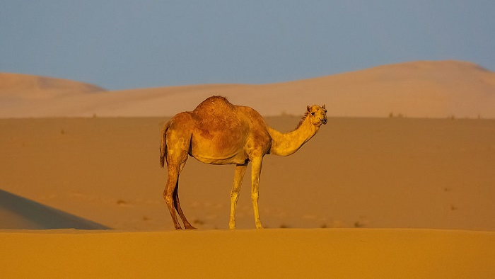

Découvrire les plats Emblématique du Laayoune et Sahara marocaine
Laayoune : Saraha marocaine
La cuisine de Laâyoune est une belle illustration de l’identité saharienne profondément ancrée dans les traditions marocaines. Elle célèbre les saveurs authentiques du désert tout en adoptant et en réinterprétant les classiques marocains.
Couscous Khoumassi
Le couscous Khoumassi de Laâyoune est une merveille culinaire qui témoigne de la richesse des traditions sahariennes. Qu'il soit dégusté en version salée ou sucrée, il raconte une histoire d'hospitalité et de savoir-faire ancestral. C'est un plat qui unit les générations et célèbre l'identité culinaire marocaine.
Son nom, "Khoumassi", dérive du mot arabe "khamsa", signifiant "cinq", car ce couscous est préparé à partir de cinq types de céréales. Ce plat emblématique peut se déguster sous différentes formes, notamment en version salée, accompagnée de légumes et de viande, ou en version sucrée, agrémentée de miel, dattes et fruits secs.
Zaynaba
La Zaynaba est un plat de viande de chèvre préparée de manière très spécifique : la viande est confitée dans des braises enfouies sous le sable chaud du désert. Cette méthode de cuisson ancestrale permet d’obtenir une viande tendre, juteuse et imprégnée d’arômes fumés et terreux.
Le Tichtar à Base de Viande de Dromadaire
Le Tichtar est un mets emblématique de la région saharienne du Maroc, notamment apprécié dans des villes comme Laâyoune et les zones environnantes. Ce plat tire son authenticité de sa préparation traditionnelle à base de viande de dromadaire séchée au soleil et mijotée lentement. La particularité de ce plat réside également dans l’utilisation de la graisse de la bosse du dromadaire, appelée Loudek, qui ajoute une richesse et une profondeur de goût uniques.
Explorez la diversité des saveurs dans autres villes du Maroc
Tanger, Fez, Oujda, Marrakech et Ouarzazate
Bon voyage à travers les saveurs du Maroc !